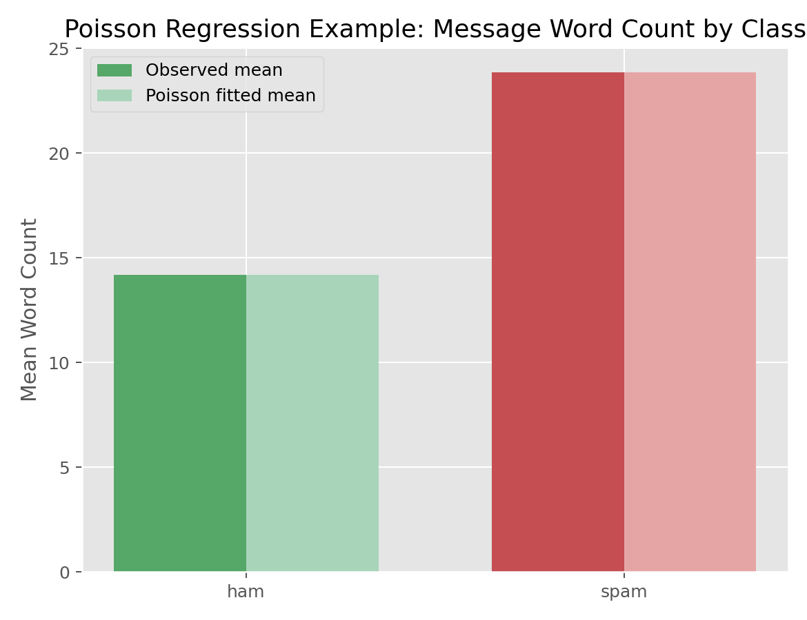

回归与广义线性模型 · 03·04
Poisson回归
Poisson Regression
Poisson回归（Poisson Regression）
§1
方法概览
1.1 定义
Poisson 回归用于建模非负整数计数结局，核心思想是在 log 尺度上把期望计数表示成协变量的线性组合。
1.2 它主要解决什么问题
- 研究问题：哪些因素会影响某类事件“发生多少次”。
- 适用任务：计数结局建模、率建模、带 offset 的发生率建模。
- 常见医学场景：住院次数、随访期间事件次数、某类短信词数、病房感染事件率。
1.3 直觉理解
Poisson 回归不是在原始计数上加减，而是在 log 尺度上建模，因此协变量通常对应“计数乘上多少倍”的解释，而不是“多几个”。
§2
数学形式
2.1 核心公式
$$ \begin{aligned} Y_i &\sim \mathrm{Poisson}(\mu_i) \\ \log(\mu_i) &= \mathbf{X}_i^\top \boldsymbol{\beta} \end{aligned} $$
若建模率（rate），则常写成：
$$ \log(\mu_i) = \log(t_i) + \mathbf{X}_i^\top \boldsymbol{\beta} $$
其中 $\log(t_i)$ 是 offset。
2.2 参数或统计量含义
- $\mu_i$：第 $i$ 个观测的期望计数。
- $\beta_j$：协变量在 log-mean 尺度上的效应。
- $\exp(\beta_j)$：协变量每增加 1 单位，对期望计数的乘法因子。
- offset：暴露时间、人口规模、观察窗口等已知基准量。
2.3 关键假设
- 观测独立。
- 结局是计数型非负整数。
- 在标准 Poisson 假设下，$\mathrm{Var}(Y_i)=E(Y_i)=\mu_i$。
- log 尺度上的均值模型正确。
§3
数据形式与输入输出
3.1 适合的数据形式
- 自变量类型：连续、二分类、多分类都可。
- 因变量类型：计数型。
- 数据结构：独立样本宽表，或聚合后的计数表。
- 是否适合高维数据：可以，但常需正则化或特征筛选。
- 是否适合缺失较多数据：需先明确缺失处理策略。
- 是否适合删失数据：不适合；删失事件数据应转向生存分析。
- 是否适合重复测量数据：普通 Poisson 回归不适合，应考虑 GEE 或 GLMM。
3.2 示例表格
为了给计数结局一个简单而直观的示例，下面用短信文本中的 word_count（词数）作为计数型响应，label 作为分组变量：
| label | word_count | message_length |
|---|---|---|
| ham | 20 | 111 |
| ham | 6 | 29 |
| spam | 28 | 155 |
| ham | 11 | 49 |
| ham | 13 | 61 |
3.3 输入与产出
输入
- 输入数据：计数型结局和协变量。
- 关键变量：计数结局、分组变量、连续预测变量、exposure/offset。
- 需要预处理的内容：缺失处理、必要时构造 rate 的 offset。
产出
- 模型对象/统计结果：系数估计、标准误、deviance、Pearson 统计量。
- 参数估计：log-rate 系数或 rate ratio。
- 预测结果：期望计数或期望率。
- 不确定性指标：标准误、区间估计、稳健方差。
§4
适用场景
- 适合：计数结局、事件率、暴露时间不同的率比较。
- 不适合：连续结局、极端过度离散而又不做修正的计数数据。
- 使用前需要特别检查的点：是否存在大量 0、是否有过度离散、是否需要 offset。
§5
实现
常用包：
scikit-learnstatsmodels
import pandas as pd
from sklearn.linear_model import PoissonRegressor
df = pd.read_csv("spam.csv", encoding="ISO-8859-1")"v1", "v2"
df["word_count"] = df["v2"].astype(str).str.split().str.len()
df["is_spam"] = (df["v1"] == "spam").astype(int)
X = df"is_spam"
y = df["word_count"]
fit = PoissonRegressor(alpha=0, max_iter=1000)
fit.fit(X, y)
print(fit.intercept_, fit.coef_)
print(fit.predict([[0], [1]]))
常用包：
stats
df$word_count <- lengths(strsplit(df$message, " "))
fit <- glm(word_count ~ label, family = poisson(link = "log"), data = df)
summary(fit)
exp(coef(fit)) # rate ratios
§6
结果如何解释
- 核心结果看什么：系数符号、rate ratio、deviance 与过度离散迹象。
- 每个主要参数如何解释：若 $\exp(\beta)=1.20$，可解释为协变量增加 1 单位时，期望计数增加 20%。
- 临床或医学意义如何表达：更适合解释“发生次数”或“发生率倍数变化”。
- 常见误读：Poisson 系数不是均值差；rate ratio 也不是 odds ratio。
§7
推荐可视化
- 组间均值计数比较图。
- 观测均值 vs 拟合均值图。
- rate 或 count 的分组箱线图 / 散点图。
7.1 图像示例
下图比较不同短信类别下词数的观测均值与 Poisson 模型拟合均值。

§8
优势、局限与常见坑
优势
- 对计数结局解释自然。
- 可方便扩展到率建模和 offset。
- 与 GLM 框架完全兼容。
局限
- 标准 Poisson 假设要求均值和方差相等。
- 过度离散时标准误会偏小。
- 对零膨胀数据不一定合适。
常见坑
- 把连续变量硬当计数变量。
- 忽略过度离散。
- 忘记在率模型中加入 exposure offset。
§9
与相近方法的区别
- 和 Logistic 回归的区别：Poisson 建模计数或率，Logistic 建模事件概率。
- 和负二项回归的区别：负二项回归额外允许方差大于均值。
- 和 Quasi-Likelihood 的区别：Quasi-Likelihood 保持同样的均值模型，但允许更灵活的方差结构。
§10
医学研究中的典型应用
- 建模随访期间住院次数。
- 建模不同暴露时间下的事件率。
- 描述文本、行为或服务事件的发生频率。
§11
相关方法
§12
参考资料
- Hilbe JM. Modeling Count Data. Cambridge University Press; 2014.
- scikit-learn Developers.
sklearn.linear_model.PoissonRegressor. scikit-learn API Reference. https://scikit-learn.org/stable/modules/generated/sklearn.linear_model.PoissonRegressor.html （访问日期：2026-07-02） - R Core Team.
glm. R Manual. https://stat.ethz.ch/R-manual/R-devel/library/stats/html/glm.html （访问日期：2026-07-02） - Venables WN, Ripley BD.
glm.nb. MASS Manual. https://stat.ethz.ch/R-manual/R-devel/library/MASS/html/glm.nb.html （访问日期：2026-07-02）
— 黑盒词典 · 03·04 —